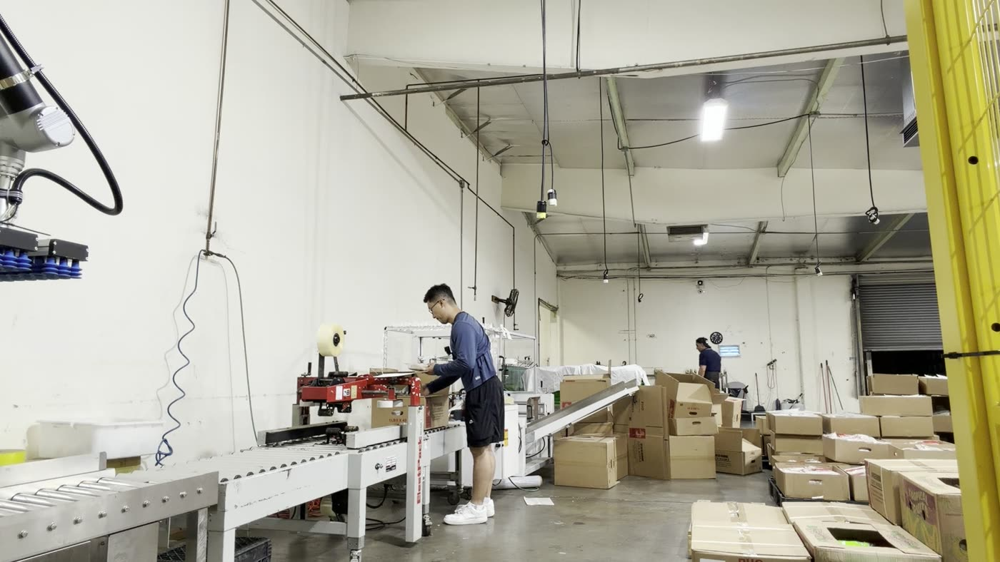
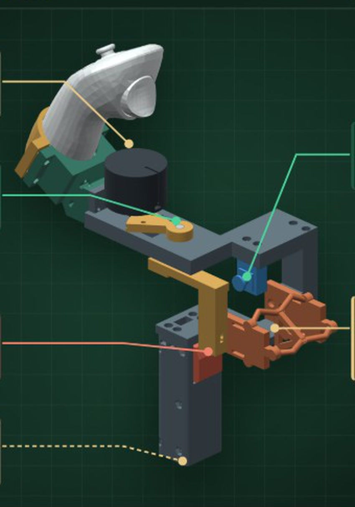
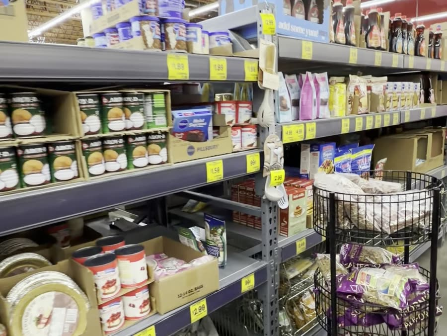
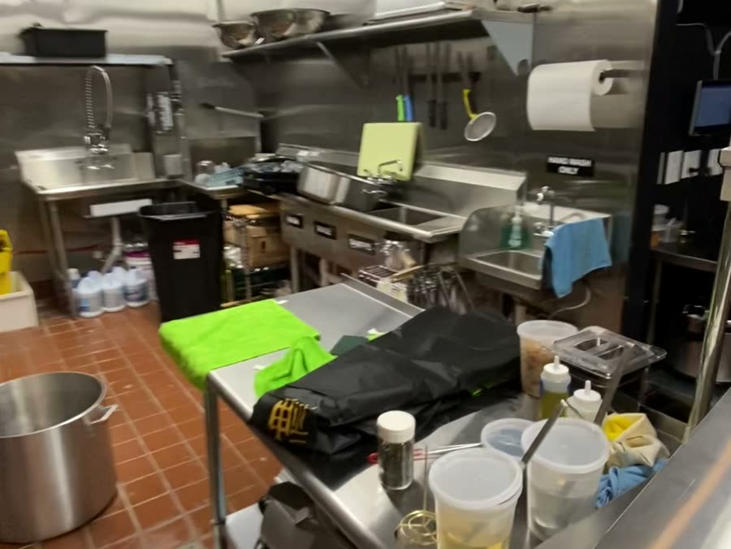
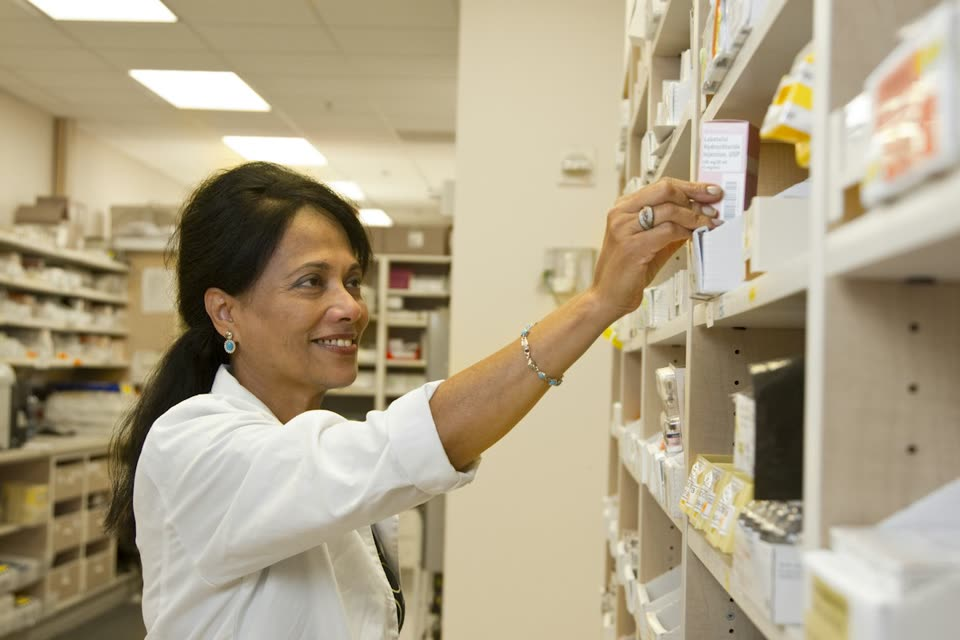

我们在做什么
交付整条工作流，Luna 是其中的一个工位
从客户的任务出发：接通业务系统，设计整条流程，遥操员先带着机器人开工，再把验证过的任务交给模型。团队 7 人：3 位创始人，4 位硬件工程师。

装箱工位：Luna 的位置能力一 · 全身遥操
直觉的全身遥操：做得快，做得准，留下好数据
人怎么动，Luna 就怎么动。加上力反馈和天机的力控臂，遥操员驱动 Luna 干活又快又准，很少需要返工。这样采下来的数据是好数据，模型学到的策略也才是好策略。
视频循环播放，点开可以放大。
为什么快、为什么准
全身直觉映射
操作员探身、转身、伸手，Luna 的底盘、腰、头和双臂跟着做同一个动作。不用想按键，上手快。
力反馈
手上知道什么时候碰到了、现在用了多大的力。接触的那一下不用试探，一次到位。
力控臂
天机的手臂在接触时顺着力走，不硬顶。刮、擦、插这类要一直保持接触的活，做得稳。
能力二 · 力反馈设备
我们的力反馈主端：它是什么，为什么好
人拿起一个东西的瞬间，就知道它的形状、大小、软硬，该用多大的力，快滑了会马上握紧。我们的主端把这些感觉传回远程操作员的手上。

为什么好 · 一：接触类的活做得成
为什么好 · 二：人的示范能教会策略
对操作员：做得更快、更准
手上有了接触的感觉，碰到东西的那一下就不用猜。动作更快、更准，过冲少，多余的试探也少。
对模型：接触本身被记了下来
力和触觉信号、机器人做了什么、人怎么改的、物体最后怎么样，都在同一个时钟上。模型团队学接触类任务时缺的正是这些，而且它们来自真实的作业现场。
为什么和天机协作
力控本体加力反馈主端，正是模型厂商最需要的那种数据
这套组合天然契合：天机的力控双臂负责在接触时做出可控的动作，我们的主端让操作员知道什么时候该收力、加力或换个方向。少了任何一边，上面的两个结果都出不来。
天机 · Luna 的力控双臂

- 七轴、关节级力控
- 接触时能做出可控的动作
- 腕部和夹爪能测到接触
- 轮式底盘和升降腰，够得着整个工位
C-Robotics · 全身遥操和力反馈主端
- 人的全身动作变成 Luna 的协调动作
- 接触方向、夹持力度、瞬时接触传回操作员的手
- 从端触觉夹爪按天机的法兰设计，直接安装
- 客户、工位和业务系统由我们带来
模型厂商要的数据
- 全身的：底盘、腰、双臂和夹爪一起
- 带接触的：力、触觉和人的纠正
- 真实的：来自客户每天在跑的工位
- 做得成的：自主策略今天进不去的活，遥操先做起来
一个例子：拿稳软袋，又不夹坏
装箱时，双臂要把软袋送到位，操作员还要判断：夹稳了吗？该加力，还是该松一点？天机的双臂执行调整，我们的主端帮人判断该怎么调，这一次判断和结果一起被记录下来。
已有的真机基础
- Luna 上的全身遥操
- 笔式主端在擦玻璃任务上的力反馈纠正
想和天机一起验证
- 三路反馈的主端在软袋上的效果：重抓、破损和耗时
- 用它采的示范，能不能训出更好的策略
第一个联合试点
选一个抓取多的高价值场景，一起做第一个试点
可以是食品厂装箱，可以是超市，也可以是我们正在谈的其他场景。同一台 Luna，同一批物品，一起验证两件事。
验证一
能稳定处理哪些物品
- 请客户挑出自主策略难以稳定处理的物品，比如软袋。
- 逐类看：遥操能否完成、每件耗时、重抓几次、有没有压坏。
- 结果：哪几类可以交给 Luna，客户和天机都能自己判断。
验证二
力反馈采到的示范，能不能训出更好的策略
- 同样的机器人、夹爪和视角，力反馈开、关各采一批。
- 先看多余的试探是否减少，同时保留「打滑后及时补握」这类有价值的纠正。
- 结果：固定示范数量和训练预算，用没见过的物品测策略的成功率。
C-Robotics 带来
- 客户、工位和整条流程
- 业务系统接入和任务调度
- 遥操团队和现场工程
- 力反馈主端和数据记录
邀请天机带来
- Luna 本体
- 接口支持
- 法兰和挂件的预留位
- 算力选配
天机能得到
- 一个可复用的美国客户工位方案
- 力控双臂在真实工位上的表现
- 哪些夹具和本体能力值得继续投入的现场依据
本轮融资
Pre-Seed 轮，50 万至 100 万美元
我们认为，只有大量进入不同的、多元的场景，本体的价值才会逐渐起来。
钱花在哪
我们的主端设备
把力反馈主端做完、做成可以批量上工位的设备。
再采购一批 Luna 本体
一部分进客户现场，一部分留在实验室做开发和回归测试。
部署高价值场景
进场，做客户系统和现场设备的集成，把场景一个个跑起来。
已经有客户的场景


正在看的高价值场景

我们希望与天机一起完成首个试点，也欢迎天机以战略投资方身份参与本轮融资。